Why ArtWatch?
Artists deal with many issues in this day and age.
AI image generators can be trained on art to produce similar pieces.
Their images can sometimes be reposted without credit and can be stolen.
ArtWatch offers:
- Invisible watermark using DCT
- Invisible watermark using Steganography
- Visible watermark
- Comparing two images using ORB and SIFT
- Automated Reverse Search
- Add FGSM to disrupt AI scraping
Steganography
- Steganography is where information is hidden in the last bit of every pixel.
- It is also known as LSB (Least Significant Bit) watermark.
- The watermark is converted into ASCII then into bits and each bit replaces the LSB of a pixel.
- LSB is simple to implement but very fragile to compression, resize and noise.
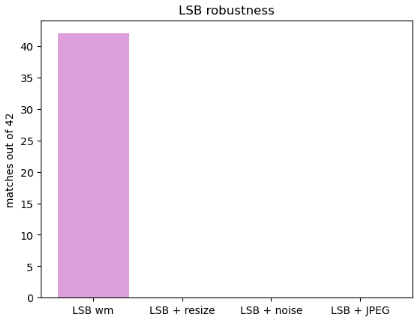
LSB robustness
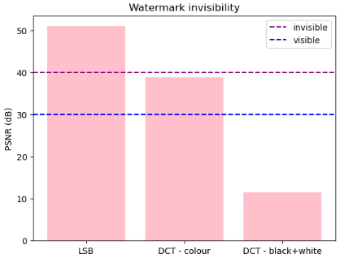
Watermark invisibilty
DCT
- DCT (Discrete Cosine Transform) splits an image into 8x8 pixel blocks.
- It converts these pixel values into frequency values.
- It works in YCrCb and adds the watermark to the brightness channels.
- The watermark is converted to bits and added to the frequency value making it either odd or even.
- It is then changed back into an image. This watermark is strong against compression but sensitive to resizing.
- This watermark works well on colour images but struggles to encode and decode watermark on black and white images.
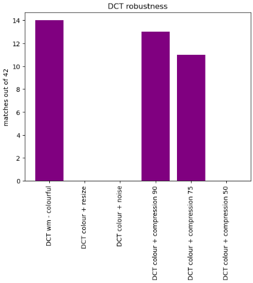
DCT robustness on colourful images
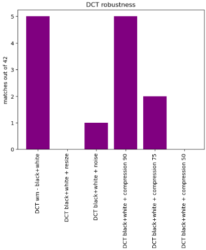
DCT robustness on black and white images
SIFT and ORB
- SIFT (Scale-Invariant Feature Transform) and ORB (Oriented Fast and Rotated Brief) are feature matching techniques.
- They find the most unqiue points in an image and compare them to the second image to see how similar they are.
- ORB is fast and good for quick comparisons.
- SIFT is slower but more accurate and gets more unique points.
- Adding blur can sometimes help the algorithms focus on bigger features instead of smaller details.
- It can help spot similar artworks and style transfers.
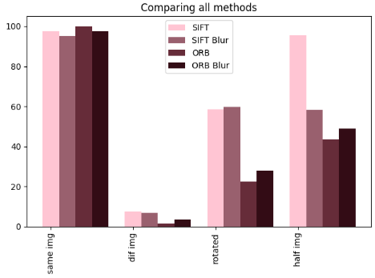
Preformance across all 4 methods
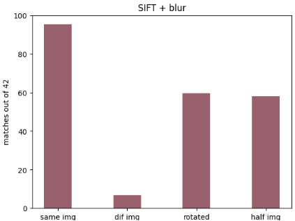
SIFT with blur
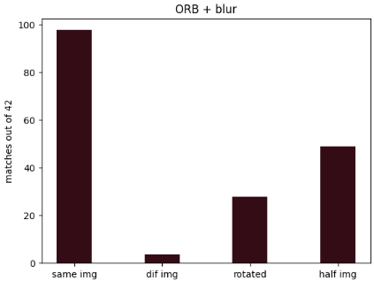
ORB with blur
FGSM
- FGSM (Fast Gradient Sign Method) adds tiny perturbations (+1 or -1 to pixel values) based on the epsilon value.
- This is a type of adversarial attack which was created to make AI models misclassify images.
- These changes look invisible to humans but can be a significant change to AI models.
- This can help artists protect their artwork and art styles from AI scrapers.
- ArtWatch uses epsilon value 0.01 which is strong enough and does not affect the image too much.
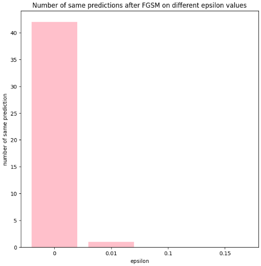
Number of same predictions after FGSM was applied
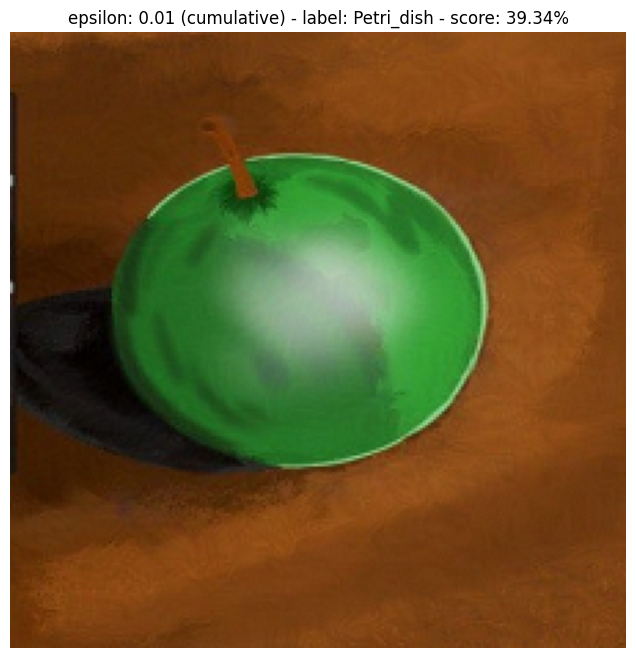
epsilon: 0.01
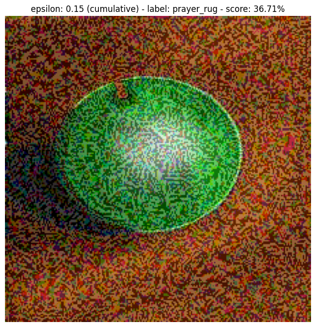
epsilon: 0.15
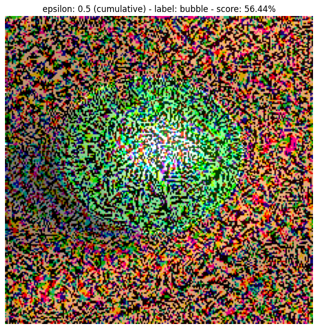
epsilon: 0.5
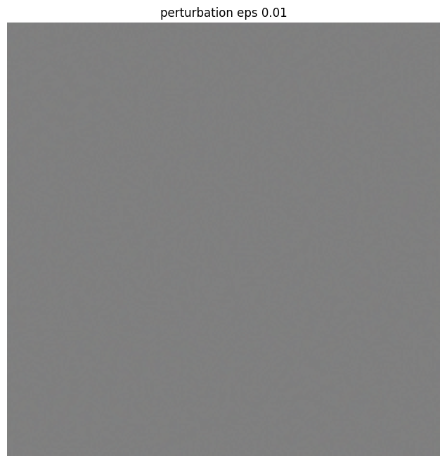
epsilon: 0.01
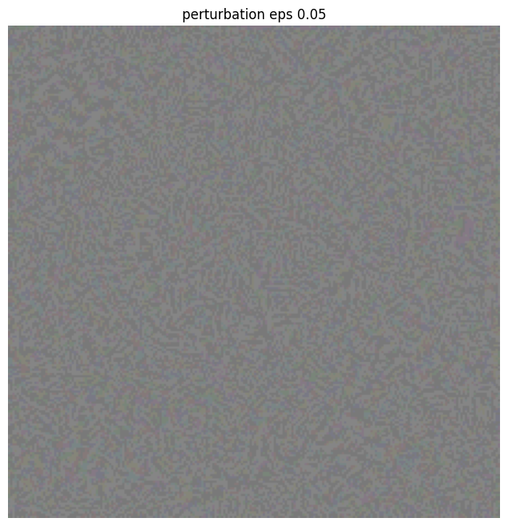
epsilon: 0.05
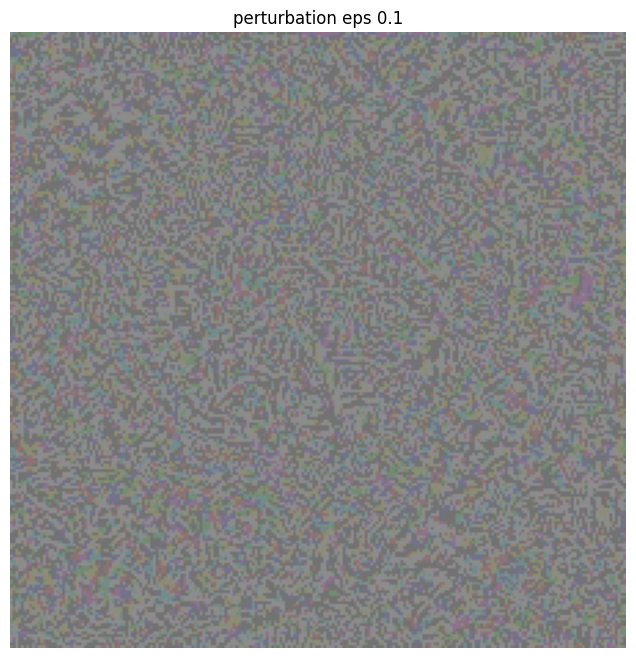
epsilon: 0.1
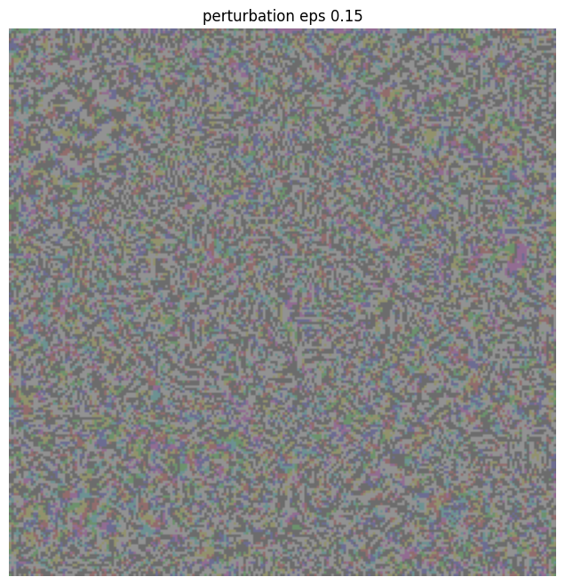
epsilon: 0.15
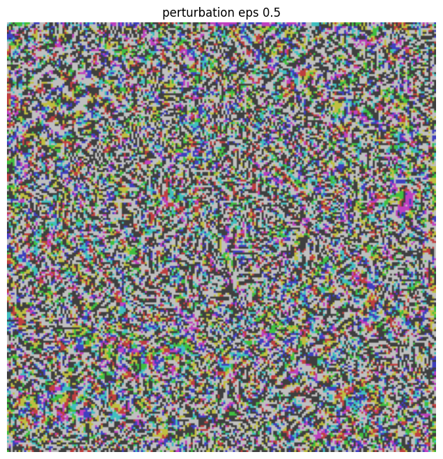
epsilon: 0.5
Automated Reverse Image Search
- Each image is uploaded to imgBB to get the image URL.
- The image URLs are sent to SerpAPI which does reverse image search on the images and gets the most similar images found.
- This can help artists check for reposts and similar copies.
- It allows artist to scan up to 9 images every 30 days.
- This can help artists search up similar copies of their artwork in a time effecient way.